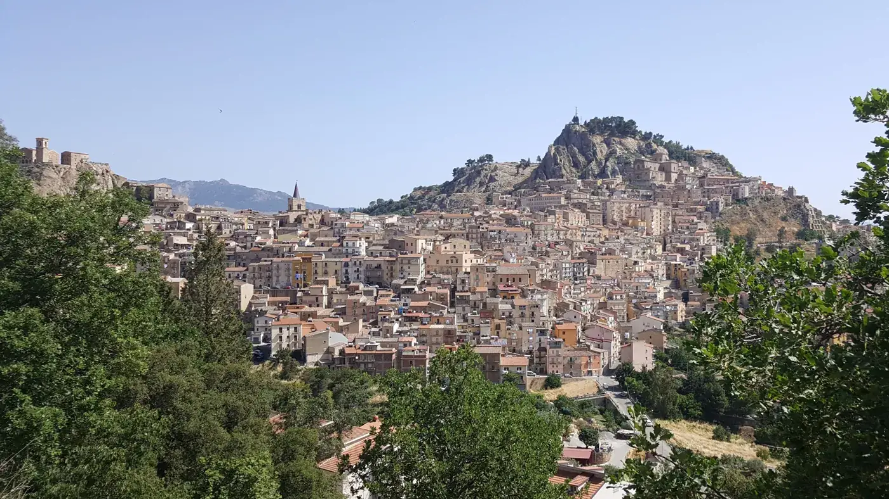
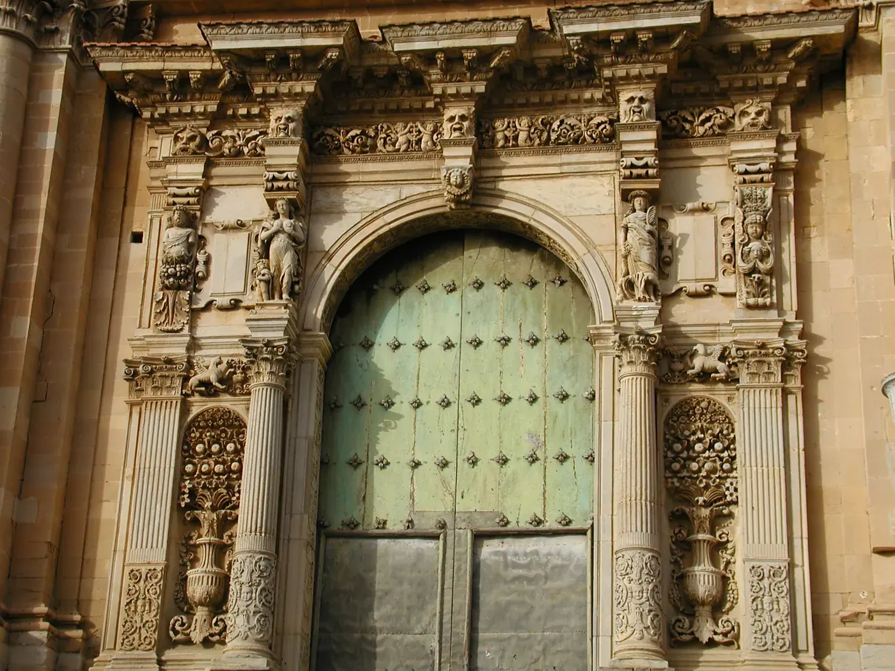

Nicosia è un borgo medievale nel cuore della Sicilia, in provincia di Enna, tra i monti Nebrodi. Lontano dal turismo di massa, regala vicoli antichi, chiese ricche di storia, panorami sulle colline e una cucina autentica. Ecco cosa vedere e cosa fare durante il tuo soggiorno.
Il centro storico e i vicoli medievali
Il cuore di Nicosia è il suo centro storico, un intreccio di vicoli, scalinate e piazze che raccontano secoli di storia. Conosciuta come la "città dei 24 baroni" per le nobili famiglie che vi risiedevano, conserva palazzi storici, scorci panoramici e un'atmosfera autentica. Una passeggiata senza meta tra le sue strade è il modo migliore per coglierne il fascino. La Mansarda si trova proprio qui, a pochi passi dai principali punti di interesse.

La Cattedrale di San Nicola
La Cattedrale di San Nicolò è il principale monumento religioso di Nicosia. Risalente al XIV secolo, colpisce per il campanile, il portale e gli interni che custodiscono opere d'arte di valore. È il punto di riferimento del centro e una tappa imperdibile per chi visita la città.
La Basilica di Santa Maria Maggiore e i portali barocchi
La Basilica di Santa Maria Maggiore è uno dei gioielli di Nicosia, celebre per il maestoso portale barocco e per le opere conservate al suo interno. Insieme alle chiese di Sant'Antonio Abate e del Santissimo Salvatore, compone un itinerario tra arte sacra, sculture e affreschi che testimoniano la ricchezza storica del borgo.

Monte Altesina e la natura dei Nebrodi
Per gli amanti della natura, Monte Altesina è una meta da non perdere: sentieri di trekking conducono a panorami spettacolari sul cuore della Sicilia. Tutt'intorno a Nicosia si estendono le colline verdi dei Nebrodi, con riserve naturali, boschi e percorsi ideali per escursioni a piedi o in bici.

Laghi e paesaggi
Nei dintorni si trovano i laghetti Campanito e altri specchi d'acqua immersi nel verde, perfetti per una giornata all'aria aperta. La zona di Sambughetti e le aree naturali circostanti offrono scenari incontaminati, lontani dai circuiti turistici più affollati.

Tradizioni, feste e cucina locale
Nicosia vive di tradizioni: processioni, sagre ed eventi popolari scandiscono l'anno e raccontano l'anima del borgo. La cucina locale è da scoprire nei ristoranti tipici del centro, tra piatti della tradizione siciliana e prodotti del territorio.
Insediamenti rupestri e storia antica
Il territorio di Nicosia conserva insediamenti rupestri e tracce di una storia millenaria scavata nella roccia, testimonianza dei popoli che hanno abitato questa terra. Un patrimonio che aggiunge profondità a una visita già ricca di arte e natura.
Per approfondire: la voce Nicosia su Wikipedia e il sito del Comune di Nicosia.
Come arrivare a Nicosia. In auto, Nicosia è a circa 1h30 da Catania e dal suo aeroporto (Fontanarossa), e raggiungibile da Palermo e da Enna. La posizione centrale nell'isola la rende un'ottima base per esplorare la Sicilia interna. Presso La Mansarda è disponibile un parcheggio privato gratuito.
Soggiorna nel cuore di Nicosia
La Mansarda è un bilocale curato nel centro storico: vista monti, WiFi, parcheggio gratuito e colazione inclusa. Prenota diretto, senza commissioni.
Verifica disponibilità